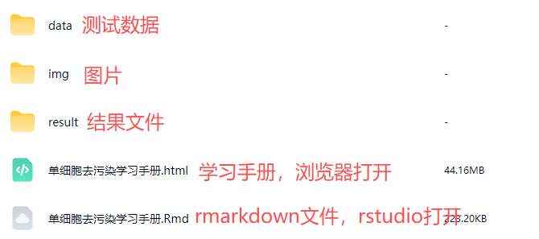

R语言scRNA-seq去RNA污染手册
原文：https://mp.weixin.qq.com/s?__biz=MzAwMzIzOTk5OQ==&mid=2247537859&idx=2&sn=18ae896ac1a635a10f5a8dd78b3ebeb8&chksm=9b3c2d93ac4ba485a4227133470989308c5495ed4b24a2a5b56f9092b9ed97c072c07433562e#rd 合集：单细胞教程全收录

进阶质控：去RNA污染

 基于液滴的单细胞RNA测序（scRNA-seq）已能够在单次实验中对数十万个细胞的转录组进行定量分析。这项技术为理解正常和病理性细胞行为的最新进展提供了支撑。此外，构建“人类细胞图谱”的大规模研究工作，关键依赖于基于液滴的scRNA-seq所产生的转录组读数的准确性和细胞特异性。基于液滴的scRNA-seq的核心假设是：每个进行分子标记和逆转录的液滴仅包含来自单个细胞的信使RNA（mRNA）。
但在实际应用中，这一假设常被违背，可能导致scRNA-seq数据的解释出现偏差。典型例子包括含有多个细胞的液滴（双细胞液滴） 和空液滴。目前，检测和去除双细胞液滴仍是研究的热点领域。另一种违背该假设的现象是：输入溶液中的无细胞RNA与包裹在液滴内的细胞混合后被测序。即使在最高质量的数据集中，这些污染性的外源性RNA也被证实存在。基于此，我们整理出了可以进行去RNA污染的软件：SoupX、DecontX、CellBender，其中SoupX的目标是去除每个细胞中无细胞mRNA分子的贡献，恢复每个细胞中每种基因的真实分子丰度；DecontX 是一种新颖的贝叶斯方法，可用于估算和去除单个细胞中的污染；CellBender的作用包括减少背景噪声引起的批次差异、降低伪差异表达信号。****
基于液滴的单细胞RNA测序（scRNA-seq）已能够在单次实验中对数十万个细胞的转录组进行定量分析。这项技术为理解正常和病理性细胞行为的最新进展提供了支撑。此外，构建“人类细胞图谱”的大规模研究工作，关键依赖于基于液滴的scRNA-seq所产生的转录组读数的准确性和细胞特异性。基于液滴的scRNA-seq的核心假设是：每个进行分子标记和逆转录的液滴仅包含来自单个细胞的信使RNA（mRNA）。
但在实际应用中，这一假设常被违背，可能导致scRNA-seq数据的解释出现偏差。典型例子包括含有多个细胞的液滴（双细胞液滴） 和空液滴。目前，检测和去除双细胞液滴仍是研究的热点领域。另一种违背该假设的现象是：输入溶液中的无细胞RNA与包裹在液滴内的细胞混合后被测序。即使在最高质量的数据集中，这些污染性的外源性RNA也被证实存在。基于此，我们整理出了可以进行去RNA污染的软件：SoupX、DecontX、CellBender，其中SoupX的目标是去除每个细胞中无细胞mRNA分子的贡献，恢复每个细胞中每种基因的真实分子丰度；DecontX 是一种新颖的贝叶斯方法，可用于估算和去除单个细胞中的污染；CellBender的作用包括减少背景噪声引起的批次差异、降低伪差异表达信号。****
往期我们也出了去除双细胞的教程，感兴趣的小伙伴可以点击scRNA-Seq双细胞过滤手册学习哦~
学习手册图片集锦：
优惠订阅资料或参与课程请联系客服微信[Biomamba_zhushou] 更多生信教程可见：为什么我们敢开放终身订阅
-Biomamba
更多生信教程可见：为什么我们敢开放终身订阅
-Biomamba


所见即所得

以html格式提供学习手册，可在浏览器中打开并翻阅学习：

单细胞去污染教程目录：
一、写在前面
二、准备工作
2.1 编程基础
2.2 硬件基础
三、SoupX
3.1 文献解读
3.2 包的安装和导入
3.3 数据下载
3.4 数据读取
3.5 向SoupChannel对象中添加额外的元数据
3.6 估计污染比例
3.7 矫正表达矩阵
3.8 PBMC8K实战
四、DecontX
4.1 文献解读
4.2 包的安装和导入
4.3 数据读取
4.4 方案一：只输入一个过滤后的细胞矩阵
4.5 方案二：提供raw/droplet矩阵
五、CellBender
5.1 文献解读
5.2 安装
5.3 数据测试
5.4 CellBender 运行输出文件说明
5.5 降维分群
六、结果比对
6.1 细胞数目对比
6.2 交集细胞对比
6.3 细胞类型偏好性对比
6.4 去污染后基因表达对比
七、总结
八、本教程用到的环境
九、单细胞教程全收录
十、欢迎致谢
文末下载链接中包含以下内容：

测试文件，总大小5.73GB
往期推送
Biomamba 生信基地现已开放终身订阅，现已包含几十篇订阅资料，未来37年持续更新：为什么我们敢开放终身订阅
2025年我们零差评完成订阅任务（2026订阅须知），2026已更新订阅内容：
风靡一时的scTenifoldKnk单细胞虚拟基因敲除,准不准?
scRNA拟时序分析三大Python包： palantir、PAGA、RNAvelocity
正刊都在用的AI驱动蛋白质从头设计流程：RFdiffusion+ProteinMPNN+AlphaFold3
转录因子、基因共表达网络分析手册：pySCENIC在脑、黑色素瘤中的应用
 **
**
**
**
持续更新中~
解锁前需阅读：2026订阅须知
订阅后解锁下方学习手册链接：
 本推送教程、测试文件下载链接：
本推送教程、测试文件下载链接：
https://pan.baidu.com/s/1k4fVammykDXU5F238xpCfQ
提取码请联系客服微信获取：